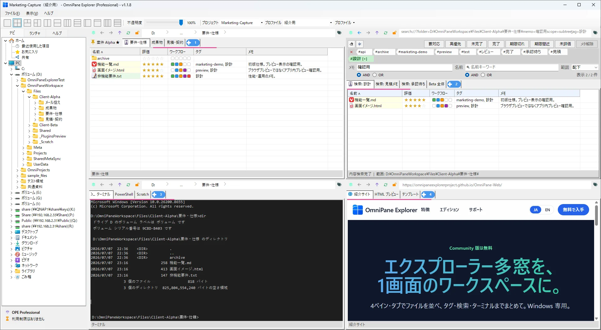
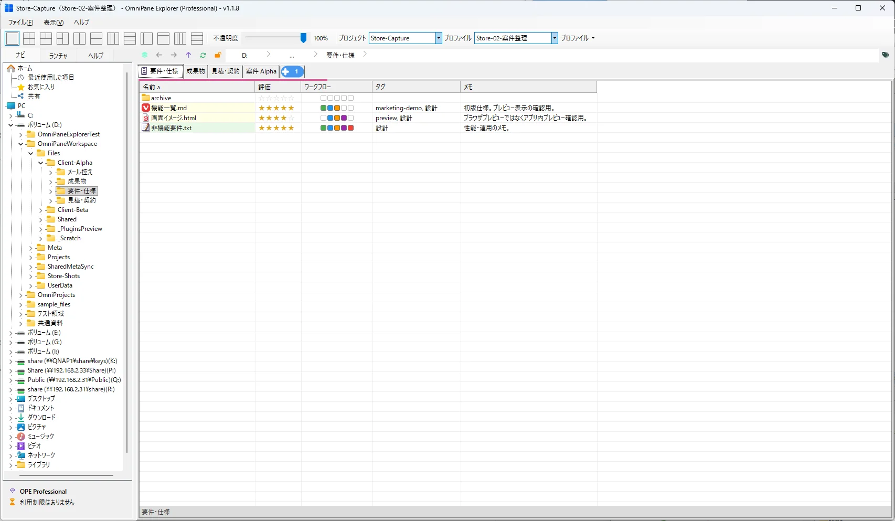
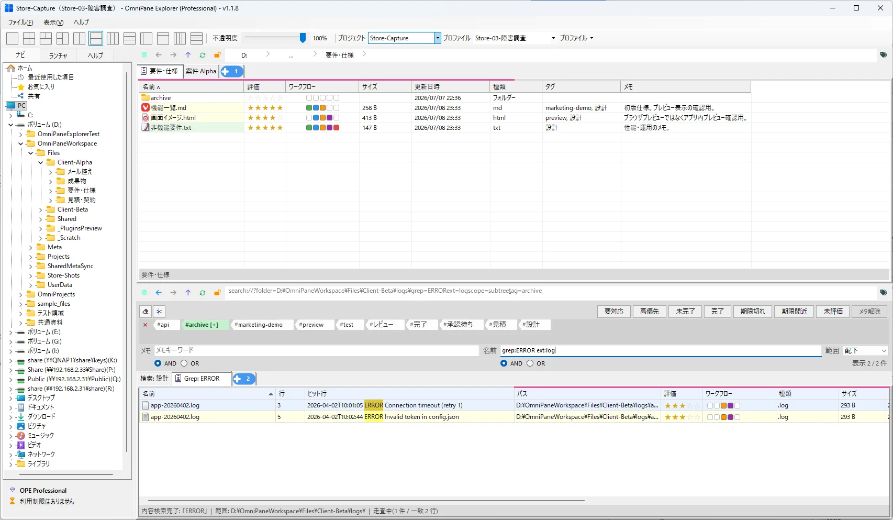
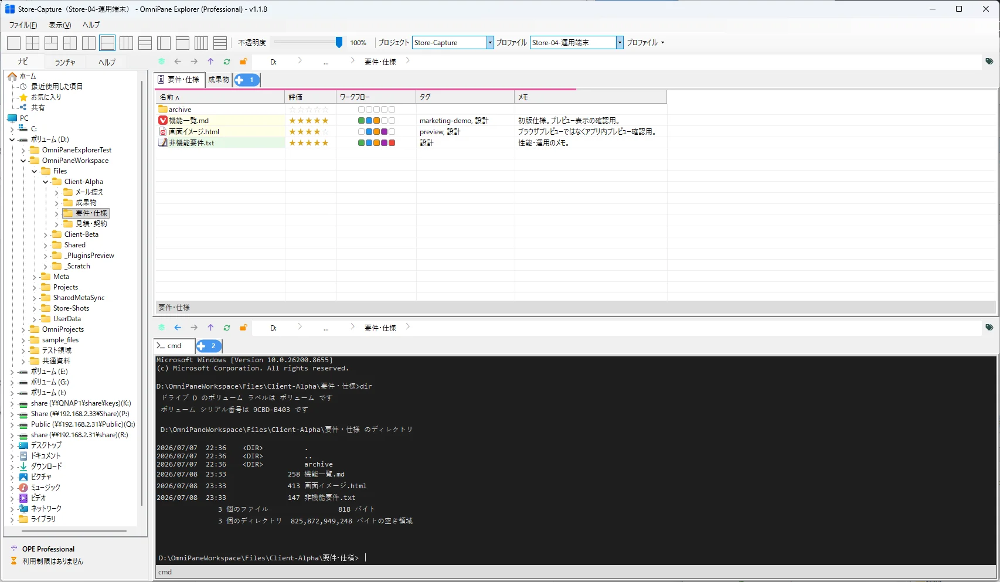
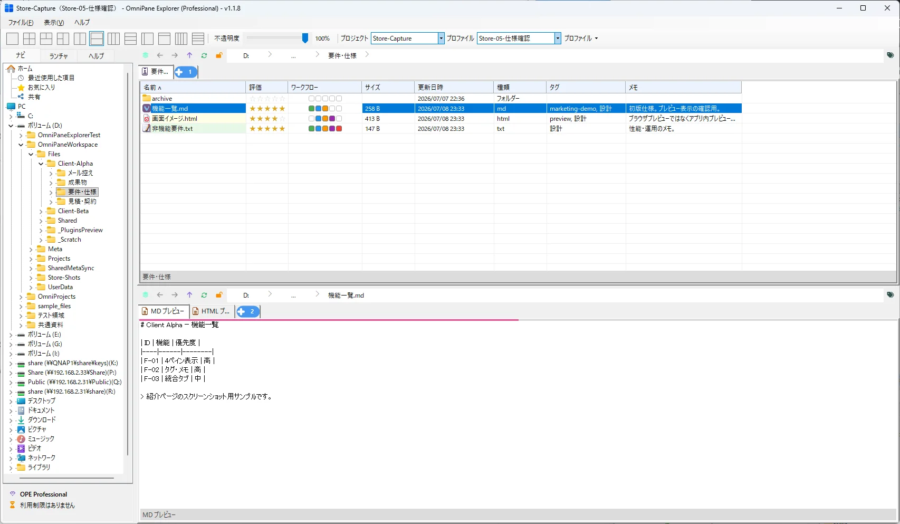
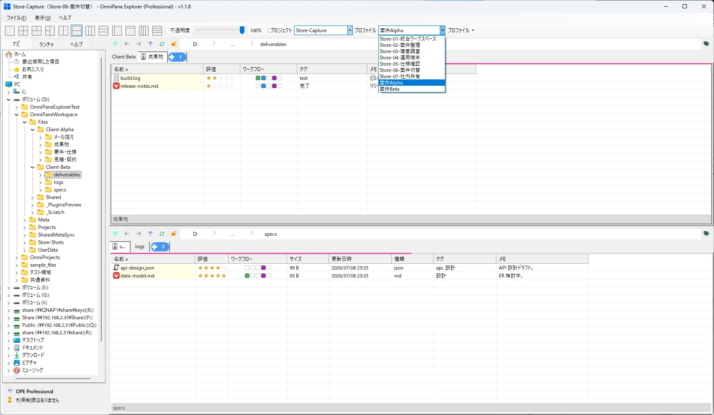

Community 版は無料
4ペイン・タブでファイルを並べ、タグ・検索・ターミナルまでまとめて。Windows 専用。
タグ・検索・ターミナル・Web を4ペインで一度に

並べる・覚える・まとめる — エクスプローラー多窓で消耗している人のための統合ワークスペース。
最大4分割・タブで、コピー元と先・参照資料をウィンドウ切替なしで同時表示。
タグ・メモ・評価で「どの案件か」をファイルに紐づけ。名前・タグ・メモ・Grep を組み合わせた横断検索。
ターミナル・プレビュー・編集を同じ画面に。案件ごとの作業レイアウトを保存・復元できます（.ope プロファイル：ペイン配置・タブ・パス）。
プロファイルで案件を切り替え、フォルダ配下を検索し、見つけた仕様書を MD・HTML・PDF でその場確認。
受託開発・社内保守の現場を想定したショートデモ（音声なし）
受託開発・社内保守の現場で使う場面を想定したスクリーンショットです。




